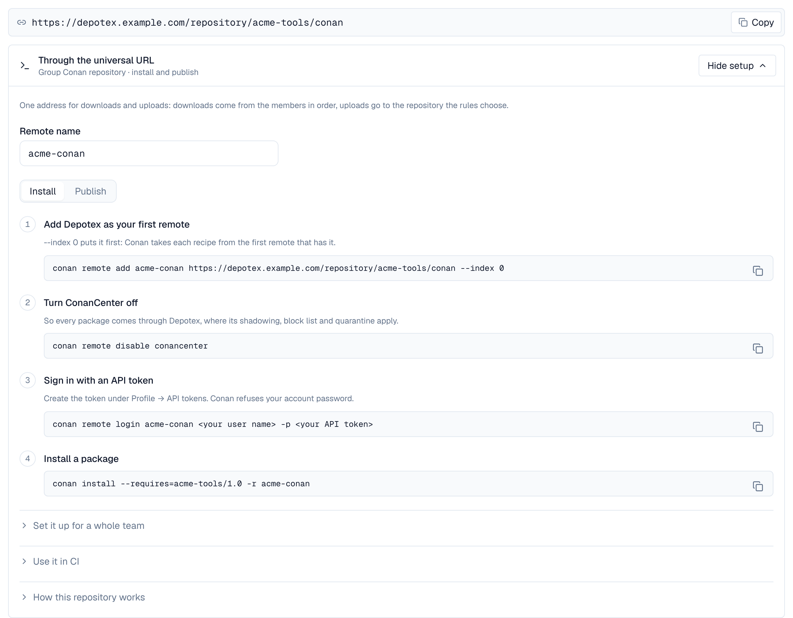
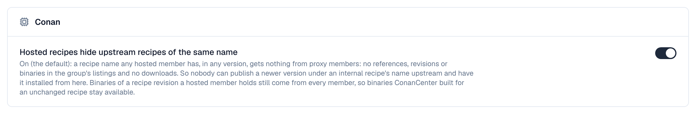
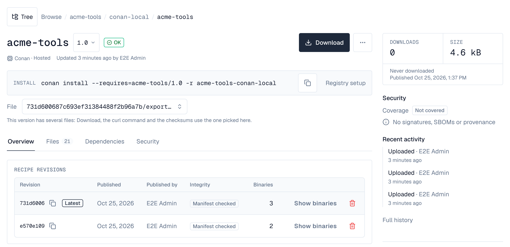
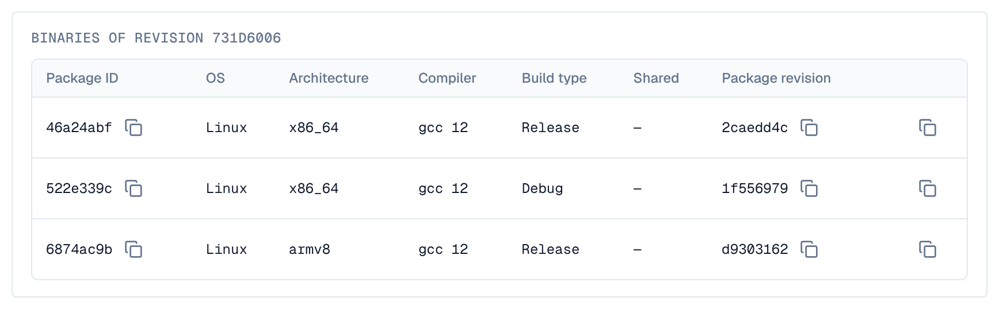

Conan repositories serve C and C++ packages to Conan 2 (2.0 or later). A hosted repository takes what conan upload sends: each recipe revision of a package version with its binaries (one per package ID, each with its own package revisions) and their metadata files, and answers conan install, list, search, download and remove. A group serves several hosted repositories as one remote. Conan proxy repositories come in a later release.
On a cluster, create Conan repositories, and Conan groups, once every server runs a version that has them: older servers answer 404 for them.
1. Set up Conan
The repository's Browse tab shows its address and, under Use this repository, these commands with the remote name you type (by default <space>-<repository>). A group shows them below its members, with a step that turns ConanCenter off; the group a space uses for Conan shows its universal address, /repository/<space>/conan:

conan remote add acme-conan https://depotex.example.com/repository/acme-tools/conan-local --index 0
conan remote login acme-conan me -p "$DEPOTEX_TOKEN"
conan install --requires=acme-tools/1.0 -r acme-conan- The address has no trailing slash: Conan adds its own paths to it.
- Sign in with an API token (Profile → API tokens) as the password; the user name can be anything. Conan keeps the token and sends it with every request, so revoking the token signs the client out.
- Conan refuses your account password. The terminal shows the server's reason, then a line of Conan's own; the address is fine:
$ conan remote login acme-conan me -p 'my account password'
ERROR: b'Use an API token as the password: Profile, API tokens'
Invalid server response, check remote URL and try again. [Remote: acme-conan]2. Make Depotex the only Conan remote
Conan takes each recipe from the first remote that has it. Quarantine and the block list apply only to what Conan asks Depotex for, so add the remote with --index 0, and turn ConanCenter off (conan remote disable conancenter) once everything you build with comes from Depotex. A group makes one remote of several repositories.
For a whole team, share the remotes in a remotes.json that conan config install copies into every machine's and CI job's Conan home. It replaces their remotes, ConanCenter included, with the ones it lists (the repository's Set it up for a whole team shows it filled in):
{
"remotes": [
{"name": "acme-conan", "url": "https://depotex.example.com/repository/acme-tools/conan-local", "verify_ssl": true}
]
}conan config install https://git.example.com/acme/conan-config.git # or a folder holding remotes.json3. Use it in CI
Conan signs in by itself from environment variables named after the remote: its name in capitals, with - as _. CONAN_LOGIN_USERNAME and CONAN_PASSWORD apply to every remote that has no variables of its own.
export CONAN_LOGIN_USERNAME_ACME_CONAN=ci
export CONAN_PASSWORD_ACME_CONAN="$DEPOTEX_TOKEN"
conan install . -r acme-conan --build=missing- Give remotes names of letters, digits and - only: a shell can't set a variable whose name has a . or other characters (conan remote rename changes the name).
- Instead of a stored token, a CI job can sign in with its own identity token through workload identity (Enterprise): the access token it gets goes in CONAN_PASSWORD_<REMOTE>.
4. Install, upload, list, search and remove
conan create .
conan upload "acme-tools/1.0" -r acme-conan -c
conan install --requires="acme-tools/[>=1.0 <2]" -r acme-conan
conan list "acme-tools/1.0#*" -r acme-conan # its recipe revisions
conan list "acme-tools/1.0:*" -r acme-conan # the newest revision's binaries, with settings and options
conan search "acme-*" -r acme-conan
conan remove "acme-tools/1.0#e570e109a3c4e0ba07c4c0bd4f9cd106" -r acme-conan -c- Uploading needs the Publish permission, removing the Delete permission; installing, listing and searching need Read. Uploads take lower-case references only.
- conan upload sends a revision's files one at a time and its manifest last. The revision appears when the manifest arrives, complete with every file, for every server of a cluster at once; until then nothing of it is listed. Files of an upload that never finishes are forgotten after CONAN_UPLOAD_TTL (see Server settings); running the upload again completes it.
- When a file is refused (too large, an upload rule, a policy), the client prints the reason and stops; nothing of that revision is installable, and fixing the cause and uploading again completes it.
- An offline repository (its Online setting off) refuses every request, and the client prints The repository is offline instead of retrying.
- Version ranges such as [>=1.0 <2] work: Conan finds the versions through Depotex's search and picks the newest that fits.
5. Revisions
- A revision never changes: its ID is the hash of its manifest, which lists every file. A changed recipe makes a new recipe revision, a rebuilt binary a new package revision, and both become the latest that conan install picks, while lockfiles keep installing the revision they pin.
- conan upload --force sends a revision that is already here again: Depotex keeps the stored files and their time and answers that all is well, so a rerun CI job passes. (Artifactory makes such a re-upload the latest revision after 60 seconds; Depotex doesn't.)
- A revision whose version a cleanup policy moved to the trash isn't listed or installable: uploading it again stores it anew, as a first upload would (and the copy in the trash can no longer be restored). Upload the recipe revision before its binaries: a binary of a recipe revision in the trash is refused until the recipe is back.
- To make an older revision the latest again, delete the newer one: conan remove "acme-tools/1.0#<newer revision>" -r acme-conan -c.
- Revisions named after a source control commit (revision_mode = "scm") and revision 0, which Artifactory gives packages migrated from Conan 1, are taken too. Their IDs say nothing about their content, so the browser shows them as Source control and Revision 0, and a revision with such an ID can't be uploaded again with other files while it's here.
6. Metadata files
Files under a revision's metadata folder (build logs, test results, SBOMs you make) travel with it:
meta=$(conan cache path acme-tools/1.0 --folder=metadata)
mkdir -p "$meta/logs" && cp build.log "$meta/logs/"
conan upload "acme-tools/1.0" -r acme-conan -c --metadata="*"
conan download "acme-tools/1.0" -r acme-conan --metadata="*"- Files can be added to a revision later by uploading it again with --metadata; files already there with the same content pass.
- Replacing a metadata file with other content follows the repository's Publishing setting: refused in a publish-once repository (the default for Conan), allowed with the Overwrite permission when the repository allows overwriting. A revision's own files never change either way.
7. Cleaning up old revisions
Cleanup policies count versions, not revisions: keeping the last versions keeps every revision and binary of each. A recipe with revision_mode = "scm" gains a revision with its binaries on every commit, so remove the older revisions from CI on a schedule:
conan remove 'acme-tools/*#!latest' -r acme-conan -c # every recipe revision but the latest, with its binaries
conan remove 'acme-tools/*:*#!latest' -r acme-conan -c # every package revision but the latest of each binary8. Groups
A Conan group is one remote over its members, in the group's order: usually the hosted repository your builds upload to first, then the others your builds install from. conan list, conan search, a reference's revisions and the binaries of a recipe revision combine every member's; the latest revision comes from the first member that has the reference, and each file from the first member that has it. Groups work on every tier. Conan proxies come in a later release: until then a proxy member has nothing to give, and a group serves its hosted members.
- Create — In the space, New repository, type Group, format Conan: the hosted repositories in the order they should be asked, and the one CI uploads to as the Default repository for uploads.
- Universal address — Make the group the space's default for Conan to also serve it at https://depotex.example.com/repository/<space>/conan (Conan's addresses have no trailing slash).
- Clients — Add the group's address as the first remote, as for a single repository above. The group's page shows the commands with your address filled in, below its members.
conan remote add acme-conan https://depotex.example.com/repository/acme-tools/conan --index 0
conan remote disable conancenter
conan remote login acme-conan me -p "$DEPOTEX_TOKEN"
conan install --requires="acme-tools/[>=1.0 <2]" -r acme-conanUpload through the group too: each revision, every file of it, goes to the hosted member the group's write rules choose by recipe name and version (a rule can send pre-releases, versions with a - such as 1.1-rc.1, to another member than releases), or to the Default repository for uploads, and that member's rules apply (the Publish permission, its size limit and Publishing setting).
When the recipe revision of a binary you upload is already in another member, conan upload finds it through the group, skips the recipe and sends only the binary, which the member uploads go to refuses: it doesn't have that recipe revision. The message names the member that has it (when you may read that member); run the upload again with --force, which sends the recipe revision too:
$ conan upload "acme-tools/1.0" -r acme-conan -c
acme-tools/1.0: Recipe 'acme-tools/1.0#e570e109a3c4e0ba07c4c0bd4f9cd106' already in server, skipping upload
...
ERROR:
Error uploading file: conan_package.tgz, '400: Recipe revision e570e109a3c4e0ba07c4c0bd4f9cd106 is in conan-thirdparty but not in conan-local: upload with --force'
$ conan upload "acme-tools/1.0" -r acme-conan -c --force- conan remove through the group deletes the revision from the first hosted member, in the group's order, that has it, and never from a proxy. To delete a revision another member has too, run conan remove against that hosted repository.
- People whose access is limited to some paths of the group (content selectors) see only what they may read, and search by exact name (conan search acme-tools): a search with a pattern is refused (403).
- A group lists at most 10,000 revisions of a reference and 1,000 references in a search, and a recipe revision's binaries within the limits of a hosted repository.
- The API's /v2/conans/<reference>/search (the binaries of a reference's latest revision) answers from the first member that has the reference. Conan 2 clients don't use it: conan list asks for a recipe revision's binaries, which combine every member's.
Hosted recipes hide upstream recipes of the same name, in the group's Settings tab, Conan card (repository admins), is on by default: a recipe name any hosted member has, at any version, gets nothing from the proxy members: no references, revisions or binaries in what the group lists, and no downloads, even when a proxy comes first. So nobody can publish a recipe under one of your internal names upstream, at a newer version either, and have it installed through the group (dependency confusion). Changing it raises the conan.settings.update event. Scripts change it with PUT /api/spaces/<space>/repositories/<group>/conan/settings and {"shadowUpstream": false} (repository admins), and read it with GET (anyone who can read the group).

- Names compare without regard to case: a hosted acme-tools hides an upstream ACME-Tools too.
- The binaries of a recipe revision a hosted member has still come from every member. When you upload an upstream recipe unchanged (the same revision) with your own binaries, the configurations upstream built for it stay installable through the group. A revision named after a source control commit, or revision 0, says nothing about its content: its binaries come from hosted members only.
- Newer upstream versions of a hidden name stay hidden: to use one, copy it into a hosted repository (conan download from upstream, then conan upload), or turn the setting off.
- It applies to the group a client reads, together with the hosted members of the groups inside it; a group inside another keeps its own setting for its own address.
9. Air-gapped networks
To move packages into a network without internet access, download them outside with their binaries, carry them across as one file and upload them to a hosted repository inside:
# Outside
conan list "acme-tools/1.0#*:*#*" -r acme-conan --format=json > pkglist.json
conan download --list=pkglist.json -r acme-conan --format=json > downloaded.json
conan cache save --list=downloaded.json --file=acme-tools.tgz
# Inside, in a Conan home whose remote is the inside repository
conan cache restore acme-tools.tgz --format=json > restored.json
conan upload --list=restored.json -r acme-inside -c- List with #*:*#*: without the last #* the list names binaries without their package revisions, and conan download --list fetches only the recipes.
- Where one machine can reach both repositories, skip the file: conan download --list=pkglist.json -r acme-conan, then conan upload --list=pkglist.json -r acme-inside -c.
Recipes download their sources from where they're published (--build=missing builds from them), which fails inside. Conan's sources backup keeps a copy, and a raw hosted repository can hold it. Set it up in the Conan home's global.conf and give Conan a token for the repository in source_credentials.json:
# global.conf
core.sources:download_urls=["origin", "https://depotex.example.com/repository/acme-tools/conan-sources/"]
core.sources:upload_url=https://depotex.example.com/repository/acme-tools/conan-sources/
# source_credentials.json, in the same folder
{"credentials": [{"url": "https://depotex.example.com", "token": "<API token>"}]}conan create . --build=missing # downloads the sources from origin
conan cache backup-upload # copies them to the backup- The token needs the Publish and Overwrite permissions on the raw repository, and its Publishing setting must allow overwriting (raw repositories' default): Conan writes each source's summary .json again on every backup upload.
- Inside, core.sources:download_urls can name the backup alone; the token needs only Read there.
10. Moving from Artifactory or Nexus
Copy every recipe revision and binary through a Conan home, then point the remotes at Depotex:
conan remote add old https://artifactory.example.com/artifactory/api/conan/conan-local
conan list "*#*:*#*" -r old --format=json > all.json
conan download --list=all.json -r old
conan upload --list=all.json -r acme-conan -c- conan list names older revisions first, so they arrive in the same order and the latest stays the latest; their times become the times of the upload.
- Running it again is safe: revisions already copied pass.
- Packages Artifactory migrated from Conan 1 have revision 0; they are copied as they are.
11. Deleting revisions
- conan remove deletes a recipe revision with its binaries, every binary of a revision (:*), or one package revision. In the browser, a version's page deletes a recipe revision with its binaries; deleting a file of a revision in the Files tab or the repository's file list deletes the whole revision it belongs to (for a binary's file, that package revision), except a metadata file, which goes alone. The confirmation says which revision and how many binaries go. Deleting needs the Delete permission, and a policy can refuse it (conan.revision.delete): conan remove then prints Permission denied with the policy's reason, and nothing is deleted.
- A deleted revision can be uploaded again. A revision named by its hash comes back with the same content; one named after a source control commit, or revision 0, can come back with other files, so delete those only when no lockfile pins them.
- A revision with more than 5,000 files is deleted in parts; if one part fails, the revision is left with fewer binaries until the delete is run again.
12. Hidden versions
- Blocked versions are left out of everything Conan lists (the latest revision, revision lists, binaries, search and so version ranges), and their files are refused. Quarantined versions are left out too while the repository's Hide quarantined versions is on; otherwise they stay listed and downloading them fails with 403. A version range then resolves to the newest version that passes; a lockfile that pins a hidden revision gets the 403.
- People whose access is limited to some paths (content selectors) see only the revisions and binaries they may read; the rest is answered as not found.
- A group lists what its members list: each member leaves out its blocked versions (and quarantined ones while it hides them), and refuses their files through the group too.
- Versions compare as Conan compares them (1.0 is 1.0.0; 1.0-rc1 comes before 1.0), for cleanup policies, quotas, quarantine and the block list.
13. Signing in and anonymous access
- On a private space, a client that hasn't signed in gets a sign-in prompt (conan remote login); in CI, where Conan can't ask, it fails with an authentication error.
- On a public space with anonymous access on, anyone can install, list and search without signing in, and signs in to upload or remove.
- Conan treats a refusal sent to a client that hasn't signed in as a request to sign in. So an anonymous download of a quarantined or blocked revision on a public space shows a sign-in prompt (or an authentication error in CI) instead of the reason; signed in, the client shows the reason. Lists leave such revisions out, so only a lockfile that pins one meets this.
14. In the artifact browser
A Conan version's page lists its recipe revisions, newest first, marking the latest: when each was published and by whom, its integrity, and how many binaries it has. Integrity is Manifest checked for a revision whose ID is the hash of its manifest, Source control and Revision 0 for the others. The Install bar shows conan install --requires=acme-tools/1.0 -r <remote>, and the Dependencies tab what the newest revision's binaries were built with.

Show binaries on a revision lists its binaries (the latest revision's at first): package ID, OS, architecture, compiler, build type, whether it's shared, and its newest package revision, with a button that copies the command installing that binary (its settings and options, and the revision when it isn't the latest). A setting or option whose value has characters a shell could read as code (spaces, quotes, $, &, ; and the like) is left out of the copied command, and a line under the table names it so you can add it by hand. In a hosted repository, Delete on a revision removes it with its binaries (Delete permission).

15. Vulnerabilities
C/C++ (Conan): not covered. Known vulnerabilities aren't matched to Conan packages: their versions show Not covered under Security, never clean, and Depotex makes no SBOM for them.
16. Events
Conan has three events of its own, besides artifact.upload and artifact.delete for each file:
- conan.revision.publish: a recipe revision or a binary's package revision is complete and about to become installable; policies can refuse it (for example a binary not built as Release). Uploading it again doesn't raise it.
- conan.revision.delete: a recipe revision with its binaries, or a package revision, is deleted, by a client or from the browser; policies can refuse it. Revisions that go with their whole version (a cleanup policy, the trash, deleting the repository) don't raise it: those raise their own events.
- conan.settings.update: a Conan group's settings change (whether hosted recipes hide upstream recipes of the same name); policies can refuse it, and it's refused when a subscriber can't be reached.
17. Licence tiers
- Hosted repositories, groups and their settings, uploads, removes and the browser's revisions and binaries: every tier.
- Quarantine and the block list: Enterprise.
18. Limits
- A file is at most 5 GiB by default, and never more than the installation's limit (Settings → Repositories). A repository's own Largest artifact, in its settings, replaces both, larger or smaller: that's how to raise or lower it for one repository.
- For very large binaries on a slow link, raise the client's timeout: -c core.net.http:timeout=300 (seconds) on the command, or core.net.http:timeout=300 in global.conf.
- Search returns at most 1,000 references; narrow the pattern (acme-* rather than *) when there are more.
- Listing a recipe revision's binaries (conan list "acme-tools/1.0:*") answers for up to 10,000 binaries, and up to 64 MiB of their conaninfo.txt when the client asks for every binary's settings and options at once (Conan 2.0 does); a revision with more is refused with a message saying so, never listed in part.
19. Server settings
| Variable | Default | What it does |
|---|---|---|
| CONAN_UPLOAD_TTL | 24h | How long the files of a revision upload wait for its manifest (1h to 720h). Set per server: each file keeps the time of the server that took it, so servers with different values don't cut each other's uploads short. |
The size limit isn't a server setting: see Limits.
20. Conan 1
Depotex is built and tested for Conan 2 (2.0 or later). Conan 1 isn't tested and may not work: use Conan 2. Packages Artifactory migrated from Conan 1 (revision 0) can be copied with Conan 2, as in Moving from Artifactory or Nexus.